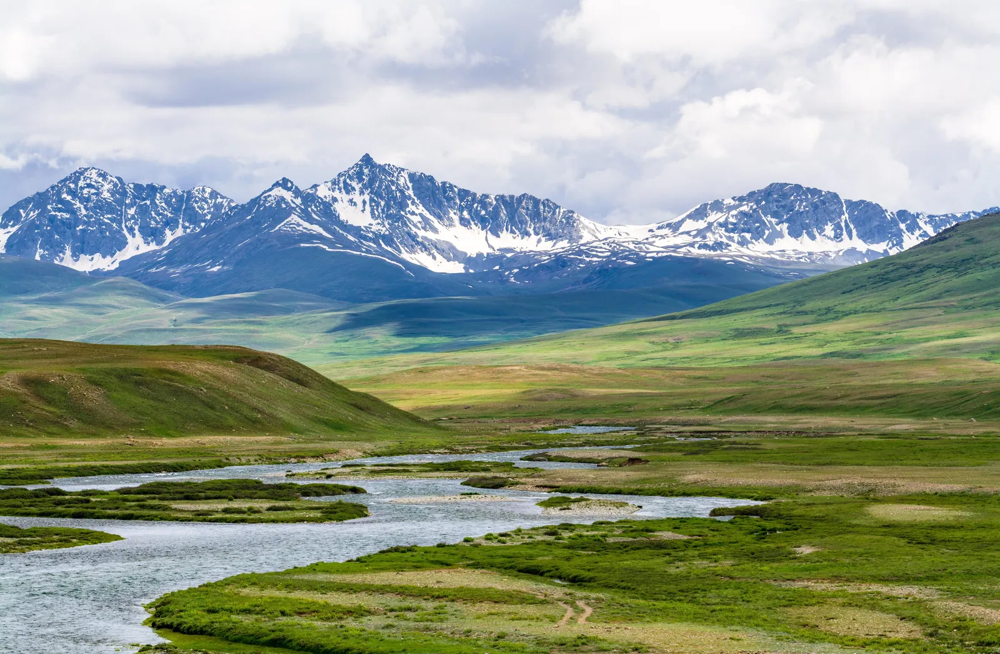

Skardu is a gateway to some of Gilgit-Baltistan’s best-known mountain landscapes. The town and surrounding region can support anything from a short scenic stay to a longer expedition-style journey. Distances are substantial, so choose excursions according to the number of days you have and the current condition of the roads.
What to see and how to plan
- 1
1. Get oriented in Skardu town
Use your arrival day for rest, supplies and checking plans with your accommodation or local operator. If you have travelled a long distance, avoid scheduling a demanding excursion immediately.
- 2
2. Visit the Shangrila area
Shangrila is a popular scenic stop in the wider Skardu region. Confirm current access, entry arrangements and travel time before setting out.
- 3
3. Plan a Satpara Lake visit
Satpara Lake is often included in local sightseeing. Weather and visibility affect the experience, so allow time to enjoy the surroundings rather than rushing through.
- 4
4. Consider the route to Shigar
Shigar offers cultural and historical interest as well as mountain scenery. Check site opening times and local transport before making it part of a tight schedule.
- 5
5. Research longer excursions separately
Deosai and other high-altitude areas require particular attention to season, weather, vehicle suitability and access. Do not assume they are open or easy to reach year-round.
- 6
6. Build a sensible daily route
Group nearby sights together and discuss realistic timings with a local driver. Mountain distances can take longer than expected.
- 7
7. Prepare for altitude and weather
Move at a comfortable pace, stay hydrated and speak to a medical professional before travel if you have concerns about high-altitude destinations. Bring warm layers even in summer.
- 8
8. Confirm flights and road transfers
Schedules and conditions can change. Leave buffer time before onward connections and understand the alternative plan if a flight or road journey is disrupted.
- 9
9. Support local businesses responsibly
Use local guides and services with clear prices and agreed inclusions. Ask permission before photographing people or private property.
- 10
10. Protect the landscape
Carry waste back, use established paths and follow local advice around lakes, wildlife and fragile high-altitude environments.
Practical travel tips
- Check seasonal access to Deosai and other high-altitude routes before booking.
- Keep buffer days where flights or long road journeys are important.
- Confirm transport, guide fees, accommodation and meals in writing.
- Pack sun protection, warm layers, rainwear and basic personal supplies.
Explore with Past Enlighten
Ask about route options, dates and what is included. Confirm the price and itinerary in writing before you book.
Continue planning
Travel conditions, access, schedules and prices can change. Confirm current details locally before departure.